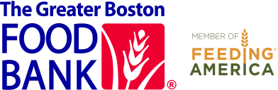

1,659
A data sculpture about food security in Massachusetts during the height of the pandemic.
The pandemic has affected so many aspects of our lives, amplifying disparities and challenges that already existed. For far too many households simply having access to enough food to eat is a daily challenge. During the early months of the COVID pandemic, an average of 1,659 new households applied for SNAP benefits every DAY in Massachusetts. This data sculpture was inspired by that number - each of the 1,659 households is represented by one knife, spoon, or fork. The pandemic is slowing here, but these families and others facing food insecurity still struggle to put food on their tables. On this site you can learn about where you can see the sculpture, discover local resources if you are in need, and learn ways you can help.
Hunger in Massachusetts
Find Food
The Greater Boston Food Bank hosts an online map of food assistance across Massachusetts, and can help you enroll for SNAP. Reach them at 617-598-5022, SNAP@gbfb.org or GBFB.org/SNAP.
The City of Boston website hosts a map of food resources. Reach them at 617-635-3717 or food@boston.gov.
Ways to Help
Calendar
Team
- Emily Bhargava (Principal, Connection Lab) - conceptualization, design, fabrication, outreach
- Rahul Bhargava (Assistant Professor, Northeastern University) - conceptualization, design, research, outreach, website
- Becca Berkey, Ph. D. (Education Innovation, Northeastern University) - facilitation, student direction
- Sofia Perez (Graduate Student, Northeastern University) - research, media production